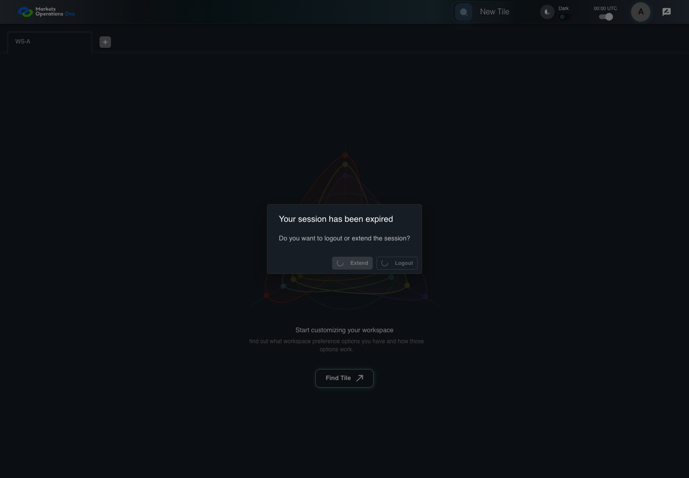

AUTH-093 logout blocks renewal paths
PASS · application/run-050/auth-093-logout-blocks-renewal-paths-08e2cdfdcafd-attempt-1 · ACTUAL_APPLICATION_LOCAL_SERVICES
Actual MFE with controlled HTTP responses, clock, visibility and popup boundary. Browser-only unsigned credentials. No real provider or server security acceptance.
2026-10-22T06:04:27.902Z to 2026-10-22T06:04:32.743Z
Assertions and result · Artifact manifest · Exact run inputs and source hashes
Result SHA-256:8b291a7963ffb5f62e287e60371accf18e831338e96da61695d6a9adb05ad2f6Machine observations
- session-fixture.json
b9068ea1ce8d28e82a9c257665ede5f08a3b030e70c2f32795f21e7219c96b0d - session-observations.json
2bc70dc442de642d1f8792cc2ba2b0f1f0d15c58ad2d03c1d983a36f8ad02d09
Screenshot capture: CAPTURED. Named frames: 17.
Step screenshot bindings: COMPLETE. 16/16 canonical steps have execution screenshots.
Bindings measure structural coverage only. They do not establish screenshot content quality or relevance.
Screenshot content review: NOT_REVIEWED. Recorded context: 0/17 frames. Identical image bytes: 12 repeated frames. Recorded context does not establish human visual review.
Canonical step timeline
Given User A is authenticated as user-a in an isolated browser context
Execution: PASSED.
1. step-01 Visible state after step 1: Given User A is authenticated as user-a in an isolated browser context
2026-10-22T06:04:29.478Z · 1440×1000
Step: /Users/lushevol/code/github/ratan-release-impact/workbench/tasks/ui-test-coverage-20261022/test-cases.md:3205
SHA-256:3ef73aaa03e0c32fbb634ced2cc4c078615e87a3a550ab3aa3ecba46b5fda935And the selected fixture tab is labelled "WS-A" inside the tablist named "workspaces" on the Home page
Execution: PASSED.
2. step-02 Visible state after step 2: And the selected fixture tab is labelled "WS-A" inside the tablist named "workspaces" on the Home page
2026-10-22T06:04:29.565Z · 1440×1000
Step: /Users/lushevol/code/github/ratan-release-impact/workbench/tasks/ui-test-coverage-20261022/test-cases.md:3206
SHA-256:3ef73aaa03e0c32fbb634ced2cc4c078615e87a3a550ab3aa3ecba46b5fda935Image bytes match frame 1. An unchanged image can be valid for consecutive assertions. This match does not establish correct step content.
And access A is expired; refresh R expires at controlled time T+600 seconds
Execution: PASSED.
3. step-03 Visible state after step 3: And access A is expired; refresh R expires at controlled time T+600 seconds
2026-10-22T06:04:29.650Z · 1440×1000
Step: /Users/lushevol/code/github/ratan-release-impact/workbench/tasks/ui-test-coverage-20261022/test-cases.md:3207
SHA-256:3ef73aaa03e0c32fbb634ced2cc4c078615e87a3a550ab3aa3ecba46b5fda935Image bytes match frame 2. An unchanged image can be valid for consecutive assertions. This match does not establish correct step content.
And the dialog named "Your session has been expired" on the Home page is visible
Execution: PASSED.
4. step-04 Visible state after step 4: And the dialog named "Your session has been expired" on the Home page is visible
2026-10-22T06:04:29.912Z · 1440×1000
Step: /Users/lushevol/code/github/ratan-release-impact/workbench/tasks/ui-test-coverage-20261022/test-cases.md:3208
SHA-256:3ef73aaa03e0c32fbb634ced2cc4c078615e87a3a550ab3aa3ecba46b5fda935Image bytes match frame 3. An unchanged image can be valid for consecutive assertions. This match does not establish correct step content.
And User A already clicked Logout; the 1000-millisecond logout delay is pending
Execution: PASSED.
5. step-05 Visible state after step 5: And User A already clicked Logout; the 1000-millisecond logout delay is pending
2026-10-22T06:04:30.070Z · 1440×1000
Step: /Users/lushevol/code/github/ratan-release-impact/workbench/tasks/ui-test-coverage-20261022/test-cases.md:3209
SHA-256:7db2f7095a4c115c55fd13a5ef72b2587f360ca593465635874315be91508813When the browser changes this page from visible to hidden
Execution: PASSED.
6. step-06 Visible state after step 6: When the browser changes this page from visible to hidden
2026-10-22T06:04:30.163Z · 1440×1000
Step: /Users/lushevol/code/github/ratan-release-impact/workbench/tasks/ui-test-coverage-20261022/test-cases.md:3210
SHA-256:7db2f7095a4c115c55fd13a5ef72b2587f360ca593465635874315be91508813Image bytes match frame 5. An unchanged image can be valid for consecutive assertions. This match does not establish correct step content.
And the pending mouse-activity timer fires
Execution: PASSED.
7. step-07 Visible state after step 7: And the pending mouse-activity timer fires
2026-10-22T06:04:30.232Z · 1440×1000
Step: /Users/lushevol/code/github/ratan-release-impact/workbench/tasks/ui-test-coverage-20261022/test-cases.md:3211
SHA-256:7db2f7095a4c115c55fd13a5ef72b2587f360ca593465635874315be91508813Image bytes match frame 6. An unchanged image can be valid for consecutive assertions. This match does not establish correct step content.
Then the button labelled "Extend" inside the dialog named "Your session has been expired" is disabled
Execution: PASSED.
8. step-08 Visible state after step 8: Then the button labelled "Extend" inside the dialog named "Your session has been expired" is disabled
2026-10-22T06:04:30.316Z · 1440×1000
Step: /Users/lushevol/code/github/ratan-release-impact/workbench/tasks/ui-test-coverage-20261022/test-cases.md:3212
SHA-256:7db2f7095a4c115c55fd13a5ef72b2587f360ca593465635874315be91508813Image bytes match frame 7. An unchanged image can be valid for consecutive assertions. This match does not establish correct step content.
And the browser records exactly 0 new POST requests to "/api/auth/v2/sso/refreshtoken"
Execution: PASSED.
9. step-09 Visible state after step 9: And the browser records exactly 0 new POST requests to "/api/auth/v2/sso/refreshtoken"
2026-10-22T06:04:30.377Z · 1440×1000
Step: /Users/lushevol/code/github/ratan-release-impact/workbench/tasks/ui-test-coverage-20261022/test-cases.md:3213
SHA-256:7db2f7095a4c115c55fd13a5ef72b2587f360ca593465635874315be91508813Image bytes match frame 8. An unchanged image can be valid for consecutive assertions. This match does not establish correct step content.
And the browser records exactly 0 new POST requests to "/api/auth/v2/sso/extend"
Execution: PASSED.
10. step-10 Visible state after step 10: And the browser records exactly 0 new POST requests to "/api/auth/v2/sso/extend"
2026-10-22T06:04:30.441Z · 1440×1000
Step: /Users/lushevol/code/github/ratan-release-impact/workbench/tasks/ui-test-coverage-20261022/test-cases.md:3214
SHA-256:7db2f7095a4c115c55fd13a5ef72b2587f360ca593465635874315be91508813Image bytes match frame 9. An unchanged image can be valid for consecutive assertions. This match does not establish correct step content.
And the browser records exactly 0 new POST requests to "/api/auth/v2/sso/relogin"
Execution: PASSED.11. step-11 Visible state after step 11: And the browser records exactly 0 new POST requests to "/api/auth/v2/sso/relogin"
2026-10-22T06:04:30.492Z · 1440×1000
Step: /Users/lushevol/code/github/ratan-release-impact/workbench/tasks/ui-test-coverage-20261022/test-cases.md:3215
SHA-256:aaa098d15868a40d5a3ca04ca0441d9c233a8ccae77c0af4dd8f245b6c9bcc10When the controlled browser clock advances through the 1000-millisecond logout delay
Execution: PASSED.
12. step-12 Visible state after step 12: When the controlled browser clock advances through the 1000-millisecond logout delay
2026-10-22T06:04:30.923Z · 1440×1000
Step: /Users/lushevol/code/github/ratan-release-impact/workbench/tasks/ui-test-coverage-20261022/test-cases.md:3216
SHA-256:59c4e063cab140c3f713f0512ac90aebc5ae2dd3932cddd7e50e5f5f00d57386Then the textbox with placeholder "Enter Username" on the login page is visible
Execution: PASSED.
13. step-13 Visible state after step 13: Then the textbox with placeholder "Enter Username" on the login page is visible
2026-10-22T06:04:31.202Z · 1440×1000
Step: /Users/lushevol/code/github/ratan-release-impact/workbench/tasks/ui-test-coverage-20261022/test-cases.md:3217
SHA-256:99567bb3808af958792a6b38879d848938c08b417fb7dfff75bde75fcbd51a3aAnd the text input with placeholder "Enter Password" on the login page is visible
Execution: PASSED.
14. step-14 Visible state after step 14: And the text input with placeholder "Enter Password" on the login page is visible
2026-10-22T06:04:31.460Z · 1440×1000
Step: /Users/lushevol/code/github/ratan-release-impact/workbench/tasks/ui-test-coverage-20261022/test-cases.md:3218
SHA-256:99567bb3808af958792a6b38879d848938c08b417fb7dfff75bde75fcbd51a3aImage bytes match frame 13. An unchanged image can be valid for consecutive assertions. This match does not establish correct step content.
And the button labelled "Sign In" on the login page is visible
Execution: PASSED.
15. step-15 Visible state after step 15: And the button labelled "Sign In" on the login page is visible
2026-10-22T06:04:31.746Z · 1440×1000
Step: /Users/lushevol/code/github/ratan-release-impact/workbench/tasks/ui-test-coverage-20261022/test-cases.md:3219
SHA-256:99567bb3808af958792a6b38879d848938c08b417fb7dfff75bde75fcbd51a3aImage bytes match frame 14. An unchanged image can be valid for consecutive assertions. This match does not establish correct step content.
And the tablist named "workspaces" on the Home page is absent
Execution: PASSED.
16. step-16 Visible state after step 16: And the tablist named "workspaces" on the Home page is absent
2026-10-22T06:04:31.977Z · 1440×1000
Step: /Users/lushevol/code/github/ratan-release-impact/workbench/tasks/ui-test-coverage-20261022/test-cases.md:3220
SHA-256:99567bb3808af958792a6b38879d848938c08b417fb7dfff75bde75fcbd51a3aImage bytes match frame 15. An unchanged image can be valid for consecutive assertions. This match does not establish correct step content.
Additional named frames

The final visible state after the named test assertions.
2026-10-22T06:04:32.370Z · 1440×1000Step: Test source: /Users/lushevol/code/github/ratan-release-impact/workbench/e2e/audit-specs/auth-remaining.spec.ts:31
SHA-256:
99567bb3808af958792a6b38879d848938c08b417fb7dfff75bde75fcbd51a3aImage bytes match frame 16. An unchanged image can be valid for consecutive assertions. This match does not establish correct step content.
Screenshots establish visible state only. Assertions and traces support functional claims.